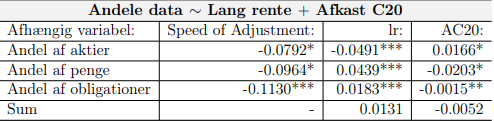
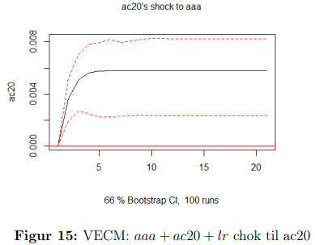
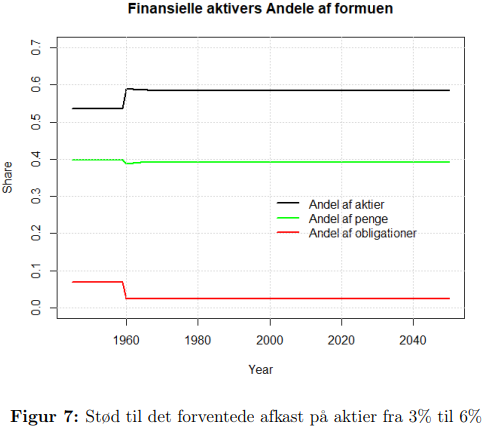

Bachelorprojekt
En efterprøvning af Tobins porteføljeteori i en teoretisk Stock-Flow Consistent model
James Tobin argumenterede, at rationelle individer vil foretrække diversitet og derfor holde forskellige typer af aktiver i deres portefølje. Her vil individer givetvis placere dele af deres formue i forskellige aktiver såsom penge, aktier, fysiske aktiver, rentebærende obligationer mv. Her foreskriver Tobins teori, at en investor vil skulle beslutte, hvor stor andelen af penge skal udgøre af den samlede portefølje af finansielle aktiver, da penge antagelsesvis ikke tjener nogen renter. I dette projekt anvendes penge (Md), aktier (Ed) og rentebærende obligationer (BLd), hvor ved teorien kan illustres som ovenfor.
 Til estimering af lambda-værdier i Tobins teori anvendes en økonometrisk single-equation model, i form af ARDL Bounds testen, der betragtes som den korrekte fremgangsmetode, da alle inkluderede variable optræder som enten I(0) eller I(1) variable. En single-equation model foretrækkes fremfor en vektor model, grundet det lave antal af observationer i dataet. Det skal bemærkes, at ARDL Bounds testen ikke tager højde for samtidskorrelation. Derfor benyttes resultaterne af vektormodellerne, med de samme inkluderede variable som i de anvendte modeller, til at bekræfte "korrektheden" af estimaterne i disse anvendte modeller. For disse vektormodeller findes signifikante resultater, med undtagelse af et stød til afkast på aktier med hensyn til andel af holdte obligationer, derudover findes de samme fortegn, som ved ARDL Bounds testen.  Her ses et eksempel med et positivt stød til afkast på aktier i form af en stigning i afkastet på C20 indekset på andel af aktier de danske husholdnigner ønsker at holde. Resultatet er som forventet, at de danske husholdninger ønsker at holde flere aktier, når afkastet herpå stiger, hvilket betyder, at den indsamlede empiri er i stand til at fange den udvikling som tobins teori forskriver. Effekten er yderligere bakket op af, at konfidensintervallet i gennem hele stødet ligger over 0, hvilket betyder, at der i hvert fald med 66% sandsynlighed er en effekt forskellig fra 0.
Resultaterne fra den økonometriske undersøgelse blev derefter anvendt i en teoretisk SFC-model for at afprøve, hvilken virkning de estimerede parametre havde på realøkonomien. Dette blev gjort ved hjælp af forskellige stød til modellen bl.a forventet afkast på aktier og et kontraktivt stød til det offentlige forbrug, der havde til formål at undersøge relation mellem allokeringen af husholdningernes forskellige aktiver og realøkonomien. Resultatet af af et stød til det forventede afkast på aktier fra 3% til 6% på allokering af de danske husholdningers finansielle aktiver kan ses på billede til højre og den realøkonomiske ændring kan ses nedenunder. Allokeringen af aktiver viser, at husholdningerne øger deres andel af aktier grundet det øgede afkast herpå, imens de sænker deres beholdning af obligationer grundet det nu relativt laver afkast herpå. Beholdningen af penge er nogenlunde uændret, da penge hovedsageligt anvendes til transaktionsformål.
Realøkonomisk ser vi øget disponibelindkomst grundet det øgede realiserede udbytte på aktier som husholdningerne opnår. Når aktieudbyttet stiger, tages dette fra virksomhedens lønudbetalinger til husholdningerne. Derved ligger ændringen i den lavere skat, der betales på aktieudbyttet. Denne effekt vil samtidig også hæve den forventede disponible indkomst. Udviklingen i forbruget sker gennem begge led i forbrugsfunktionen, hvor der først vil ske en stigning i forbruget gennem den voksende formue og samtidig også den stigende disponible indkomst. Det øgede steady state niveau i forbrug, som fremgår af den midterste figur resulterer samtidig i, at det samlede output i modellen stiger.
For yderligere uddybning, resultater og kildehenvisning henvises der til downloade den komplete opgave her under